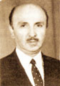

Selahaddin Çelebi (1913-1977)

Selahaddin, vatanî görevinin bir kýsmýný Kastamonu’da tamamladý ve 1936 yýlýnda terhis oldu. Bu sýrada Bediüzzaman Hazretleri de buraya sürgüne gönderilmiþti. Selahaddin; terhis olduðu zaman þehre âlim bir zatýn sürgün geldiðini, bir karakol karþýsýnda yapayalnýz yaþadýðýný, kendisi yüzünden kimseye zarar gelmesin diye insanlarla görüþmediðini öðrenir.Ýnebolu’ya geldikten sonra durumu babasýna anlatýr. Babasý hemen Bediüzzaman’ý hatýrlar ve 1908 yýlýndan beri tanýdýðýný ifade eder. Ayrýca, o tarihlerde Ýnebolu’ya geldiðini, yörenin büyük âlimlerinden olan Hacý Ziya Efendi ile birlikte þehri gezdiklerini, camide abdest alýrken büyük bir kalabalýðýn kendilerini ilgiyle izlemiþ olduðunu, Ýstanbul gazetelerinden yazýlarýný okuduðunu sözlerine ekler ve “Yarýn Kastamonu’ya gidip ziyaret edeceðim” der. (Necmeddin Þahiner; Son Þahitler, 2. C. s. 106).
Selahaddin’in babasý Ahmet Nazif ertesi gün Kastamonu’ya gider ve döndüðünde beraberinde dördüncü þuâ’yý getirir. Eldeki nüshayý çoðaltarak bir tanesini de oðluna verir. Daha sonra babasý Selahaddin’i Kastamonu’ya yollar ve Bediüzzaman’ý nasýl bulacaðýný da tarif eder. Kastamonu’ya giden Selahaddin, Ahmed Kuzu’yu bulur ve oðlu Selahaddin ile birlikte Bediüzzaman’ýn kaldýðý eve giderler. Ancak evde yoktur. Bunun üzerine Ýnebolu’lu büyük Selahaddin adaþýnýn küçük olmasý sebebiyle sadece yolu tarif etmesini ve yalnýz gideceðini söyleyerek yola koyulur. Karadað’ýn tepesinde bulunan bir aðacýn dibinde namaz kýlan Bediüzzaman Hazretleri ile ilk defa karþýlaþmýþ olur.
Selahaddin, babasýnýn çoðalttýðý eseri Bediüzzaman’a verdi. Bediüzzaman yazýlan eseri dikkatle okuyarak düzeltmeleri yaptý. Selahaddin’e yazý yazmayý bilip bilmediðini sordu. Evet, cevabýný alýnca bir cümle yazdýrdý. Yazýsýnýn güzel olduðunu görünce; “Maþaallah... Keçeli güzel yazýyorsun, sana bir Risâle vereceðim, yazar mýsýn?” diye sordu. Selahaddin büyük bir memnuniyetle kabul etti. Bunun üzerine Bediüzzaman Hazretleri birden dokuza kadar olan “Küçük Sözler”i yazýp çoðaltmasý için kendisine verdi. Böylece hem Bediüzzaman ile tanýþmýþ hem de Risâle-i Nur hizmetine hemen baþlamýþ oldu (age. s. 107). Ayrýca bu vesile ile Ýnebolu da Risâle-i Nurla tanýþmýþ oluyordu.
Risâle-i Nur ve iman hizmetine kalemiyle katýlan Selahaddin babasý ile birlikte büyük hizmetlere vesile ve aracý oldu. Ýstanbul’a yaptýðý bir seyahat esnasýnda bir ticarethanede teksir makinesini gördü. Dakikada yüz sayfayý bastýðýný öðrenince hemen satýn alýp Ýnebolu’ya getirdi. Babasý ile birlikte Ayetü’l-Kübra Risâlesi’ni teksir makinesi ile çoðalttý. Ýlk nüshayý da Bediüzzaman Hazretlerine götürdü. Duruma çok sevinen Bediüzzaman; “Ya Rabbi! bir kalemle beþ yüz nüsha yazan Nazif Çelebi ve mübarek yardýmcýlarýný Cennetü’l-Firdevste mes’ûd kýl.” (age. s. 108) Demek suretiyle duâ ve duygularýný dile getirdi.
Selahaddin Çelebi 1942 yýlýnda Kars Gümrük Muhafaza Teþkilâtý’na girdi. Ardýndan kurs için Ankara’ya gönderildi. Kursu devam ederken Lütfü Karapýnar Paþa tarafýndan çaðrýldý ve hemen tutuklandý. Eþyalarý müsadere edildi. Kaldýðý otel odasýnda arama yapýldý. Bu arada kendisine de hiçbir bilgi verilmediði gibi ne aradýklarýný söylememekte idiler. Selahaddin ne aradýklarýný sorunca, Risâle-i Nurlarý aradýklarý cevabýný aldý. Bunun üzerine, niçin kendisine söylemediklerini ve boþuna yorulduklarýný, aradýklarý kitaplarýn gardýropta olduðunu ifade etti.
Tutuklanan Selahaddin birkaç gün sorguya çekildi. Kimlerle görüþtüðü ve eserleri kimlere verdiði öðrenilmeye çalýþýldý. Bu arada birçok kiþi de takibata uðrayarak rahatsýz edildi. Yine bu tarihlerde Bediüzzaman Hazretleri de Ankara’ya getirilerek gözetim altýna alýnmýþtý. Otele yerleþtirilirken burada çalýþanlar uzaklaþtýrýlýp yerlerine sivil polisler ve güvenlik görevlileri yerleþtirildi. Daha sonra Selahaddin ile Birinci Þube Müdürlüðü’nde görüþtürüldüler. Bu görüþme sýrasýnda Bediüzzaman Hazretleri Müdüre; bunlarýn vatan evlâdý olduðunu, imana hizmet ettiklerini, emniyet ve asayiþe zarar vermediklerini, aksine muhafaza ettiklerini söyledi. Selahaddin’e de dönerek korkmamasýný tembihledi.
Selahaddin Çelebi Bediüzzamanla görüþtürüldüðü gün belediyeye gelen Vali Nevzat Tandoðan’ýn huzuruna da çýkarýldý. Vali, kendisini yanýna çaðýrdý ve omzundan sarsarak, “‘Nasýl olur, sen Cumhuriyet çocuðusun. Böyle kimsenin peþine takýlýrsýn? Bunun gayelerini bilmez misin?” diye baðýrdý. Kendisi de, “l936 senesinden beri Kastamonu’da ziyaretine giderim. Eserlerinden okudum ve neþrine çalýþtým. Bu eserler imanî ve Ýslâmî’dir. Siyasî ve menfi milliyetçilik yoktur. Milletimizin ve devletimizin aleyhinde en ufak bir kelime görseydim ve kendisinden menfi bir düþünceyi hissetseydim, ihbar eder ve herkesten önce ben düþman kesilirdim. Tamamýyla yanlýþ bir kanaate sahipsiniz. Eserleri imanîdir. Kur’ân-ý Azimüþþanýn bazý âyetlerinin tefsirlerinden ibarettir. Kastamonu’da herkes ziyaret ediyor. Polis karakolunun karþýsýnda bir evde oturuyor. Polisler her gün giren çýkaný görüyorlar.” dedi. Ýnsanlarla görüþmesinden rahatsýz olan Tandoðan, Kastamonu valisine de kýzdý.
Ankara’daki bu sorgulamanýn ardýndan Ýnebolu’ya sevk edilen Selahaddin Çelebi Ýnebolu Cezaevi’ne kondu. Daha sonra Denizli’ye sevk edildi. Birçok nur talebesi tutuklanýp zulmen hapse atýlýrken, cezaevinde bulunan birçok insanýn imanýnýn kurtulmasýna vesile oldular. Birçok mahkûm yaptýklarýndan tövbe edip ibadet etmeye baþladýlar. Kýsa zamanda hapishane “Medrese-i Yusufiye” hükmüne geçti. Bu arada Bediüzzaman Hazretleri de kibrit kutularýna yazdýðý notlarla talebelerine haber göndermekte idi. Bediüzzaman’ý gören birçok mahkûm tövbekâr oldu. Bir süre sonra Bediüzzaman ile birlikte bütün talebeleri hakkýnda beraat kararý çýktý ve böylece hapishaneden çýktýlar.
Hapisten kurtulan Selahaddin Ýnebolu’ya gitmek üzere yola çýktý ve önce Ankara’ya uðradý. Zamanýn Diyanet Ýþleri Baþkaný olan Þerafettin Yaltkaya ile görüþtü. Beraat ettiklerini ve Risâle-i Nurun neþredilmesini istedi. Bediüzzaman’ýn selâm ve taleplerini iletti. Baþkan, “‘Diyanet Riyaseti Kur’ân ve hadisten baþka hiçbir eserle ilgilenmez.”diyerek talebi geri çevirdi.
Uzun yýllar iman ve Ýslâm hizmetinde bulunan Selahaddin Çelebi 9 Ocak 1977 tarihinde vefat etti. Babasý gibi kendisi de Risâle-i Nurda ismi sýk zikredilen simalardandýr. Bediüzzaman hem kendisi hem de babasý için, “Nurun kahraman þakirtleri” (26. Lem’a) ifadesini kullandý. Kastamonu Lâhikasýnda, (Otuz bir, otuz ikinci âyetlerin Risâle-i Nur’a iþaretlerini istihrac etmeye muvaffak olan Ahmed Nazif ve oðlu Salahâddin, Risâle-i Nur’un ehemmiyetli þakirtlerinden olduðundan, Salâhaddin’in þu fýkrasý, Yirmi Yedinci Mektubun fýkralarý içine girmeye lâyýktýr.) baþlýklý mektubu yer almaktadýr.